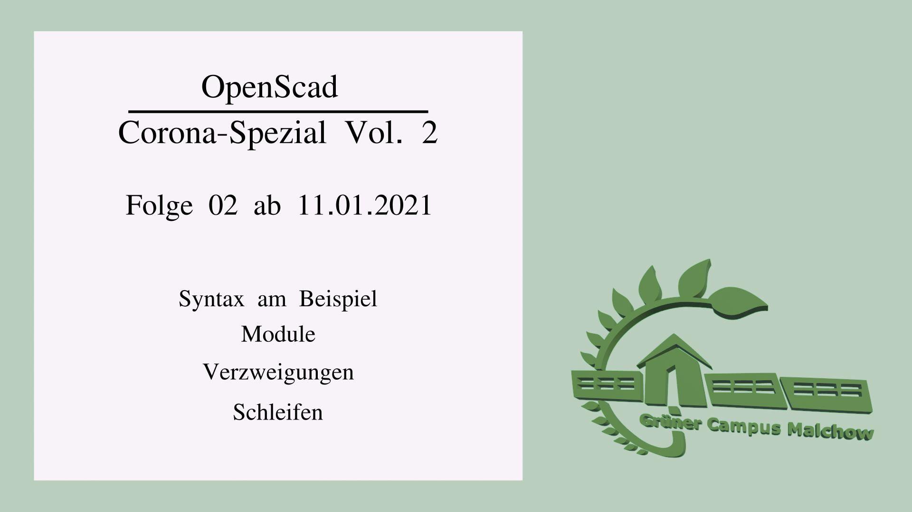

**Webseite mit Material der Informatik**
Grundkurs Klasse 12 2021-2022
# Rückblick
*Aus dem letzten Lockdown: Einführung der 3D-Modellierung mit OpenScad*
Die Aufgaben der ersten Session sind auf unserem [Youtube-Kanal](https://www.youtube.com/playlist?list=PL0JavxASM3E0wbIQIrSi8fu1R6naFvHX0) zu finden. Der Tutorial-Teil ist sicherlich hilfreich, weshalb das hier verlinkt bleibt. Die aktuellen Aufgaben findest Du weiter unten.
Hier die Folgen direkt verlinkt:
* [Tutorial 1](https://www.youtube.com/watch?v=iT_XUbgAiJY&list=PL0JavxASM3E0wbIQIrSi8fu1R6naFvHX0&index=2&t=2s)
* [Tutorial 2](https://www.youtube.com/watch?v=qek4pK5SfiE&list=PL0JavxASM3E0wbIQIrSi8fu1R6naFvHX0&index=3&t=0s)
* [Tutorial 3](https://www.youtube.com/watch?v=Jg8YudTH4Fo&list=PL0JavxASM3E0wbIQIrSi8fu1R6naFvHX0&index=4&t=12s)
* [Tutorial 4](https://www.youtube.com/watch?v=JKn9J41nqDI&list=PL0JavxASM3E0wbIQIrSi8fu1R6naFvHX0&index=5)
* [Tutorial 5](https://www.youtube.com/watch?v=CP05Ce9R2nk&list=PL0JavxASM3E0wbIQIrSi8fu1R6naFvHX0&index=7&t=0s)
* [Tutorial 6](https://youtu.be/hkYa_dOaS58)
# Ab 23.11.2021
Dieser Bereich wurde zuletzt am 23.11.21 um 21:10 Uhr aktualisiert.
Es sollen mit OpenScad die typischen Programmierprinzipien Verzweigung und Schleife wiederholt werden.
*Verzweigung (IF-ELSE)*
Eine Verzweigung entsteht, wenn im Programmablauf eine "Entscheidung" getroffen werden muss. Dies kann man sich wie eine Frage vorstellen: "Wird eine spezielle Bedingung erfüllt? Wenn ja... Wenn nein..."
*Schleife (oft FOR oder WHILE)*
Eine Schleife ist eine Wiederholung so lange, wie eine spezielle Bedingung erfüllt wird.
Das Tutorial ist als Ergänzung gedacht. Es muss auf keinen Fall in ganzer Länge geschaut werden. Das ist nur wichtig, wenn Du gar nicht klar kommst.

*Aufgaben*
Zu dem Video gibt es folgende Aufgaben. Es ist Pflicht, entweder die Aufgaben (Anfänger **und** Amateur) oder Fortgeschritte zu erledigen.
**Anfänger**
Erstelle mit OpenScad ein Schachbrett aus 8 x 8 Feldern. Die einzelnen Kästchen dürfen nicht "händisch" plaziert werden. Ihre Position muss sich innerhalb von Schleifen und Verzweigungen berechnen.
Hilfen und konkrete Hinweise gibt es im Tutorial.
**Amateure**
Einfache Fahrrad-Dynamos können zu kleinen Windrädern umgebaut werden und haben genug Leistung, um Smartphones und andere 5V-Geräte mit Strom zu versorgen.
Erstelle ein Windrad bzw. eine Windturbine, wobei Du nicht fest codest, wie viele Blätter das Windrad haben soll. Stelle Dir vor, wir drucken später diese aus und testen systematisch wieviele Schaufeln/Flächen des Windrades am Besten gehen...
**Fortgeschrittene**
DNA besteht aus einer Doppelhelix aus Zucker, Phosphat, und vier Basen (A,T,G,C). Hier eine [schülergerechte Informationsseite](https://www.simplyscience.ch/teens-liesnach-archiv/articles/was-ist-dna.html) mit vereinfachten Abbildungen.
Die Zucker sollen als Kugel, die Basen als verschieden farbige Zylinder und die Phosphate als dünne Quader dargestellt werden. Insgesamt müssen die Objekte im Raum so angeordnet werden, dass die bekannte Doppelhelix entsteht.
Knackpunkt ist also die Berechnung der Positionen im Raum.
In einer Liste soll die Abfolge kodiert sein (min. 10 Paare). Es ist nicht erforderlich, dass die biologisch korrekte Zusammenstellung der Basenpaare erfolgt.
>